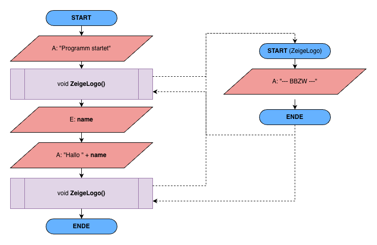

Methoden (1/3)
Lernziel
Am Ende dieser Lektion definierst und rufst du Methoden auf, verstehst den Ablauf beim Aufruf, stellst Methoden im PAP dar und übergibst Werte als Parameter.
1. Einstieg
- Ohne Methoden steht derselbe Code an vielen Stellen. Eine Änderung muss dann überall nachgezogen werden, und dabei entstehen Fehler. Eine Methode steht einmal im Programm und wird beliebig oft aufgerufen.
- Methoden zerlegen ein grosses Programm in kleine, benannte Bausteine. Ein Programm aus Methoden wie
ZeigeMenue()undZeichneLinie()liest sich fast wie ein Text. - Jedes grössere Programm besteht aus Methoden. Wer sie beherrscht, kann sich in fremdem Code zurechtfinden und eigenen Code übersichtlich halten.
2. Grundlagen
A - Eine Methode definieren und aufrufen
void ZeichneLinie()
{
Console.WriteLine("--------------------");
}
Aufruf:
ZeichneLinie();
voidbedeutet: Die Methode gibt keinen Wert zurück.- Der Name beginnt mit einem Grossbuchstaben (PascalCase) und enthält meist ein Verb:
ZeichneLinie,ZeigeMenue,BerechneSumme. - Die Klammern
()gehören zur Definition und zum Aufruf. Der Aufruf endet mit einem Semikolon.
B - Der Ablauf beim Aufruf
Console.WriteLine("A"); // 1
Zwei(); // 2, springt in die Methode
Console.WriteLine("B"); // 7
void Eins()
{
Console.WriteLine("1"); // 4
}
void Zwei()
{
Console.WriteLine("2"); // 3
Eins(); // springt in Eins
Console.WriteLine("3"); // 5
}
Bei einem Aufruf springt das Programm in die Methode, führt sie aus und kehrt danach genau an die Stelle des Aufrufs zurück. Methoden können andere Methoden aufrufen.
C - Wo steht die Methode?
- Das Hauptprogramm steht oben, die Methoden stehen darunter.
- Das Programm wird von oben nach unten ausgeführt. Eine Methode läuft erst, wenn sie aufgerufen wird. Die Definition allein führt nichts aus.
- Die Reihenfolge der Methoden untereinander spielt keine Rolle.
D - Parameter
Begruesse("Anna");
Begruesse("Ben");
void Begruesse(string name)
{
Console.WriteLine("Hallo " + name + "!");
}
Ein Parameter ist ein Platzhalter in der Definition. Beim Aufruf wird er mit einem Wert gefüllt.
Mehrere Parameter
ZeichneLinie(10, "=");
ZeichneLinie(5, "*");
void ZeichneLinie(int laenge, string zeichen)
{
for (int i = 0; i < laenge; i++)
{
Console.Write(zeichen);
}
Console.WriteLine();
}
Die Argumente beim Aufruf müssen in Anzahl, Reihenfolge und Datentyp zu den Parametern passen.
| Begriff | Bedeutung | Beispiel |
|---|---|---|
| Parameter | steht in der Definition | int laenge |
| Argument | steht beim Aufruf | 10 |
E - Parameter sind Kopien
int x = 5;
Verdopple(x);
Console.WriteLine(x); // 5
void Verdopple(int zahl)
{
zahl = zahl * 2;
}
Die Methode erhält eine Kopie des Werts. Was sie mit ihrem Parameter macht, ändert die Variable ausserhalb nicht.
F - Methoden rufen Methoden
ZeichneDreieck(3);
void ZeichneDreieck(int zeilen)
{
for (int zeile = 1; zeile <= zeilen; zeile++)
{
ZeichneLinie(zeile, "*");
}
}
So lassen sich grosse Aufgaben in kleine Bausteine zerlegen.
G - PAP: Das Unterprogramm
Ein Methodenaufruf wird im PAP als Rechteck mit doppelten senkrechten Seitenlinien gezeichnet (Symbol "Unterprogramm"). Die Methode selbst hat einen eigenen PAP.

3. Übungen
Regeln: Die offizielle C#-Dokumentation und Ressourcen im Netz darfst du verwenden. KI-Tools bleiben weg, damit der Lerneffekt möglichst gross ist.
1. Code lesen I
Was gibt das Programm jeweils aus?
a)
Console.WriteLine("Start");
Gruss();
Console.WriteLine("Mitte");
Gruss();
Gruss();
Console.WriteLine("Ende");
void Gruss()
{
Console.WriteLine("Hallo!");
}
b)
Console.WriteLine("A");
Zwei();
Console.WriteLine("B");
void Eins()
{
Console.WriteLine("1");
}
void Zwei()
{
Console.WriteLine("2");
Eins();
Console.WriteLine("3");
}
2. PAP zeichnen
Zeichne den PAP für ein Programm, das zuerst die Methode ZeichneLinie, dann den Text "Titel" und danach nochmals ZeichneLinie aufruft. Zeichne zusätzlich den PAP der Methode ZeichneLinie selbst, die 20 Minuszeichen mit einer Schleife ausgibt.
3. Fehler finden I
Das Programm soll "Start", "Hallo!" und "Ende" ausgeben. Es enthält zwei Fehler, beide sind Kompilierfehler. Finde beide und korrigiere sie. Tipp: Der Compiler meldet nicht immer alle Fehler auf einmal.
01 Console.WriteLine("Start");
02 Gruss;
03 Console.WriteLine("Ende");
04
05 void Gruss()
06 {
07 Console.WriteLine("Hallo!")
08 }
4. Menü und Linie schreiben
- Schreibe eine Methode
ZeigeMenue(), die drei Zeilen ausgibt:1) Neues Spiel,2) Einstellungen,0) Beenden. - Schreibe eine Methode
ZeichneLinie(), die mit einer Schleife 20 Minuszeichen in einer Zeile ausgibt. - Das Hauptprogramm ruft
ZeichneLinie()auf, gibt den Text "Titel" aus, ruft nochmalsZeichneLinie()auf und ruft danachZeigeMenue()auf.
5. Code lesen II
Was gibt das Programm aus?
int x = 5;
Verdopple(x);
Console.WriteLine(x);
Zeige(3, "m");
Zeige(10, "cm");
void Verdopple(int zahl)
{
zahl = zahl * 2;
Console.WriteLine("In der Methode: " + zahl);
}
void Zeige(int wert, string einheit)
{
Console.WriteLine(wert + " " + einheit);
}
6. Fehler finden II
Die Methode Rechteck soll ein Rechteck aus dem angegebenen Zeichen ausgeben. Beide Aufrufe sind fehlerhaft. Finde beide Fehler, erkläre sie und korrigiere sie.
01 Rechteck("*", 4, 2);
02 Rechteck(3, 2);
03
04 void Rechteck(int breite, int hoehe, string zeichen)
05 {
06 for (int z = 0; z < hoehe; z++)
07 {
08 for (int s = 0; s < breite; s++)
09 Console.Write(zeichen);
10 Console.WriteLine();
11 }
12 }
7. Methoden mit Parametern schreiben
Schreibe folgende Methoden und rufe jede im Hauptprogramm mindestens einmal auf:
ZeichneLinie(int laenge, string zeichen)gibt eine Linie in der angegebenen Länge aus dem angegebenen Zeichen aus.Begruesse(string name, int alter)gibt zum BeispielHallo Anna, du bist 17 Jahre alt.aus.GibRechteckAus(int breite, int hoehe)gibt ein Rechteck aus#aus. Verwende dafür deine MethodeZeichneLinie.
8. Dreieck (Zusatz)
Schreibe eine Methode ZeichneDreieck(int zeilen), die ein Dreieck aus Sternen ausgibt. Beispiel für 4 Zeilen:
*
**
***
****
Verwende dafür deine Methode ZeichneLinie.
4. Weiterführende Beispiele und Gedanken
- Typische Stolperfalle: Die Definition einer Methode führt sie nicht aus. Ohne Aufruf passiert nichts.
- Nächste Lektion: Methoden mit Rückgabewert. Dann kann eine Methode ein Ergebnis zurückliefern, zum Beispiel
int Quadrat(int zahl). - Überlege: Welche Aufgaben aus den Blöcken Bedingungen und Schleifen enthalten Code, der sich in eine Methode auslagern liesse?
- Hinweis: In Anleitungen im Internet siehst du oft
static voidvor dem Methodennamen und eine KlasseProgramum den Code. Das ist die ausführlichere Schreibweise, die im nächsten Semester erklärt wird. Die Methoden funktionieren in beiden Varianten gleich. - Weiterführend: Offizielle Dokumentation zu Methoden: https://learn.microsoft.com/de-de/dotnet/csharp/programming-guide/classes-and-structs/methods